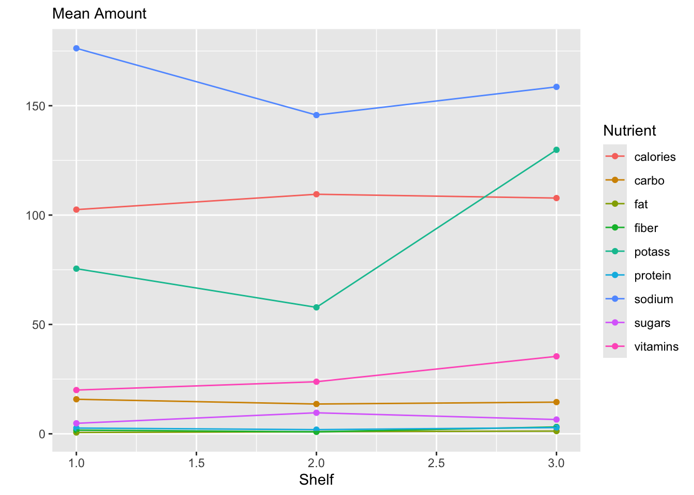

cereal|>select(-weight, -cups, -rating)|>pivot_longer(cols =calories:vitamins, names_to ="nutrient", values_to ="amount")|>group_by(shelf, nutrient)|>summarise(mean_amount =mean(amount))|>ggplot(aes(x =shelf, y =mean_amount, color =nutrient))+geom_point()+geom_line()+labs(x ="Shelf", y ="", subtitle ="Mean Amount", color ="Nutrient")

The first step is completed for you – removing some columns we don’t need.
Reshape the data longer. You should have this code written down in handout 7!
Check out the long data. Does it look how you expected? What does one row represent? Did you draw it correctly in handout 7?
One row is one cereal and nutrient combination! There are 9 nutrients, so there are 9 rows per cereal. Since the name, manufacturer, type, and shelf are unique for a cereal, these values are repeated for each of the 9 rows per cereal.
The plot shows the mean nutrient amount for each nutrient and shelf. Calculate these values using your dplyr skills.
Create the plot!
More Reshape
Tables can be useful to communicate information from data as well!
Everyone is obsessed with protein and fiber these days!
Goal: A table of the number of cereals that are low/medium/or high protein and low or high fiber.
Create a variable called protein_level labeling each cereal as “low”, “medium”, or “high” protein, using the following categorizations:
low: 0-1 g protein
medium: 2-4 g protein
high: more than 4 g protein
Create a variable called fiber_level labeling each cereal as “low” or “high” fiber, using the following categorizations:
low: 0-2 g fiber
high: more than 2 g fiber
Find the number of cereals for each combination of protein and fiber level.
Is this table easy to read? What might help?
cereal |>
Error in parse(text = input): <text>:3:0: unexpected end of input
1: cereal |>
2:
^
# A tibble: 3 × 3
protein_level fiber_high fiber_low
<chr> <int> <int>
1 high 1 2
2 low 0 13
3 medium 28 33
Reshape the data so that there is a column for each fiber level.
Why are the names of the columns “low” and “high”? How could we make these clearer?
Why are there missing values in the resulting table? What do they represent? In this case, would it make sense to replace those missing values with something?
What do you think now? What would help make this table more readable?
One way to present rows of dataframes nicely when you render your Quarto is to use the kable() function in the knitr package. Format your output nicely with kable().
Source Code
---title: "Code-Along 7: More Data Wrangling"filters: - versionsversions: - student: out-dir: ".." yaml: author: "Your Name" embed-resources: true - solution: out-dir: ".." out-file: "07-code-along-solution.qmd" yaml: author: "SOLUTIONS" embed-resources: trueformat: html: code-tools: true toc: true execute: error: true echo: true message: false warning: false---```{r}#| label: setup#| echo: falselibrary(tidyverse)library(liver)library(knitr)data(cereal)```## Revisit PlotRemember the plot we started working on this week? Let's actually create it! Follow the steps below to build up the code.```{r}#| version: studentcereal |>select(-weight, -cups, -rating) ``````{r}#| version: solutioncereal |>select(-weight, -cups, -rating) |>pivot_longer(cols = calories:vitamins,names_to ="nutrient",values_to ="amount") |>group_by(shelf, nutrient) |>summarise(mean_amount =mean(amount)) |>ggplot(aes(x = shelf, y = mean_amount, color = nutrient)) +geom_point() +geom_line() +labs(x ="Shelf", y ="", subtitle ="Mean Amount",color ="Nutrient")```1. The first step is completed for you -- removing some columns we don't need.2. Reshape the data **longer**. You should have this code written down in handout 7!3. Check out the long data. Does it look how you expected? What does one row represent? Did you draw it correctly in handout 7?:::{.version-solution}*One row is one cereal and nutrient combination! There are 9 nutrients, so there are 9 rows per cereal. Since the name, manufacturer, type, and shelf are unique for a cereal, these values are repeated for each of the 9 rows per cereal.*:::4. The plot shows the mean nutrient amount for each nutrient and shelf. Calculate these values using your dplyr skills.5. Create the plot! ## More ReshapeTables can be useful to communicate information from data as well! Everyone is obsessed with protein and fiber these days! **Goal**: A table of the number of cereals that are low/medium/or high protein and low or high fiber. 1. Create a variable called `protein_level` labeling each cereal as "low", "medium", or "high" protein, using the following categorizations: - low: 0-1 g protein - medium: 2-4 g protein - high: more than 4 g protein2. Create a variable called `fiber_level` labeling each cereal as "low" or "high" fiber, using the following categorizations: - low: 0-2 g fiber - high: more than 2 g fiber3. Find the number of cereals for each combination of protein and fiber level.4. Is this table easy to read? What might help?```{r}#| version: studentcereal |>``````{r}#| version: solutioncereal |>mutate(protein_level =case_when(protein <=1~"low", protein <=4~"medium",.default ="high"),fiber_level =if_else(fiber <=2 ,"low","high")) |>count(protein_level, fiber_level) |>pivot_wider(values_from = n,names_from = fiber_level,names_prefix ="fiber_",values_fill =0)```5. Reshape the data so that there is a column for each fiber level.6. Why are the names of the columns "low" and "high"? How could we make these clearer?7. Why are there missing values in the resulting table? What do they represent? **In this case**, would it make sense to replace those missing values with something? 8. What do you think now? What would help make this table more readable?9. One way to present rows of dataframes nicely when you render your Quarto is to use the `kable()` function in the knitr package. Format your output nicely with `kable()`.